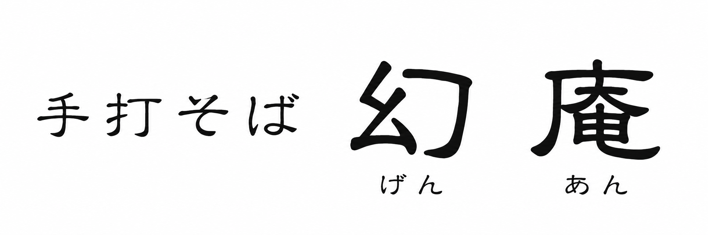
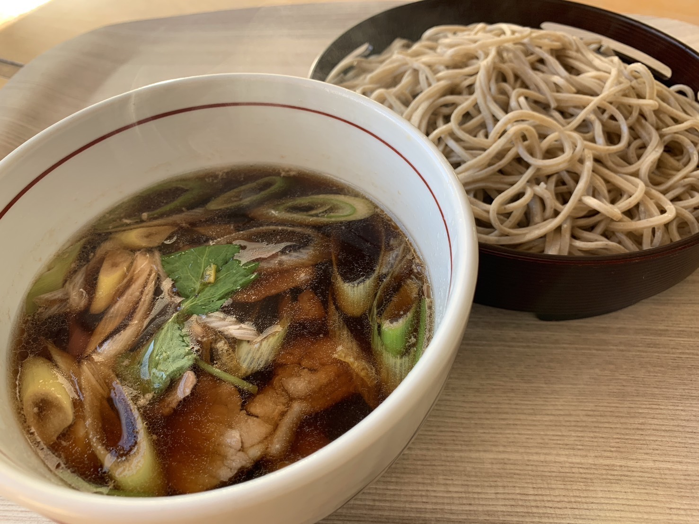
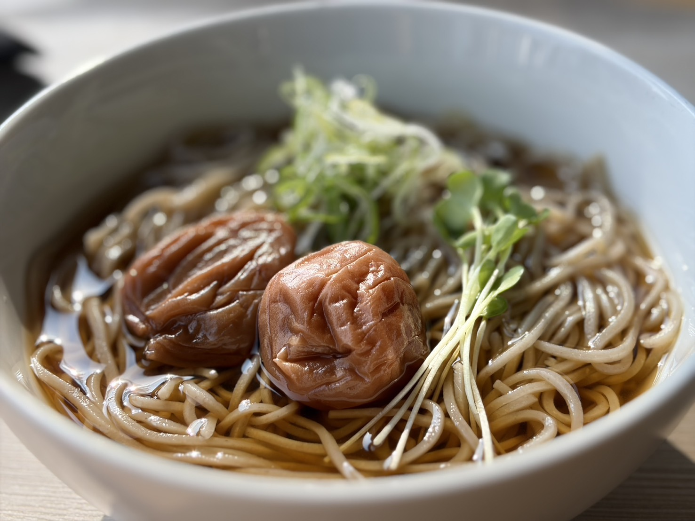
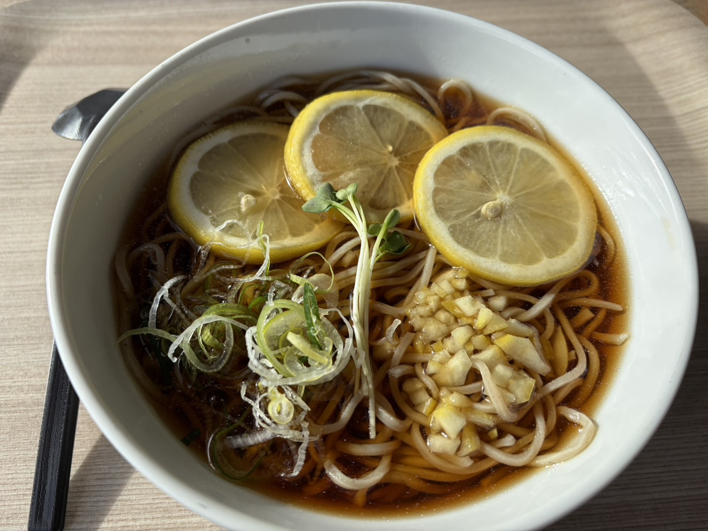

北海道岩見沢市 ／ 手打ちそば専門店
北海道の大地が育てたそばを、石臼でゆっくりと挽き、 手打ちで丁寧に仕上げます。
営業時間
定休日：日曜日 · 水曜夜 · 毎月最終週月曜 ※ 最終週月曜が祝日の場合は営業し、翌日が休みとなります
職人の技と素材への敬意
昔ながらの石臼でゆっくりと挽くことで、そば本来の香りと風味を最大限に引き出します。粗挽きならではの食感が楽しめます。
一打一打、職人の手で丁寧に打ち上げるそば。機械では出せないしなやかさとコシが手打ちの醍醐味です。
北海道の豊かな大地が育てた厳選そば粉を使用。素材の良さをそのままお届けします。
当店自慢の一品
1,400円
鴨の旨みが溶け込んだ温かいつけ汁で味わう、 当店おすすめの一品です。
季節に合わせた限定メニューをご用意しています
1,100円
紀州南高梅の爽やかな酸味が、 そばの風味を引き立てます。
※ 仕入れ分が完売次第、提供終了となります。

900円
レモンの爽やかな香りと酸味が楽しめる、 夏にぴったりの一品です。

ご来店前に場所と営業状況をご確認ください